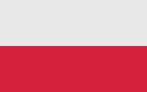

Na ziemiach polskich pierwszy mecz koszykówki został rozegrany przez kobiety.
Miało to miejsce 29 czerwca 1909 roku we Lwowie – w zawodach odbywających
się na trawiastym boisku z koszami bez tablic, zagrało sześć zespołów gimnazjalnych.
Po odzyskaniu przez Polskę niepodległości, koszykówka stała się sportem
powszechnie nauczanym w szkołach podstawowych i średnich. W styczniu 1919
odbył się pierwszy centralny turniej koszykówki mężczyzn. W kolejnych latach (aż do 1928)
organizowano w Polsce bardzo wiele zawodów koszykówki zarówno męskiej, jak i kobiecej,
rozgrywanych przez drużyny szkół średnich. Pierwsze oficjalne Mistrzostwa Polski miały
miejsce we wrześniu roku 1929 w Krakowie. Mistrzostwa te dotyczyły koszykówki mężczyzn oraz kobiet.
Według innych źródeł, pierwsze mistrzostwa Polski w koszykówce odbyły się w 1928 roku,
natomiast w koszykówce kobiet w 1929 roku. Pierwszy międzynarodowy mecz koszykówki
w którym brała udział Polska, rozegrały kobiety. Ten mecz między Polską a Szwecją
rozegrany został w czerwcu 1930 w Krakowie. Polki wygrały 30:13. Pierwszy międzynarodowy mecz
koszykówki mężczyzn Polska rozegrała z Estonią. Spotkanie to miało miejsce w Tallinnie w lutym 1935 roku.
W tym samym roku reprezentacja kobiet zdobyła złoty medal na Akademickich Mistrzostwach Świata w Budapeszcie.
W 1936 koszykówka stała się sportem olimpijskim. Polska zajęła wtedy IV miejsce i było to najwyższe miejsce
wśród państw europejskich. W 1938 roku w Rzymie miały miejsce pierwsze oficjalne Mistrzostwa Europy w koszykówce kobiet – Polska zajęła III miejsce[21].